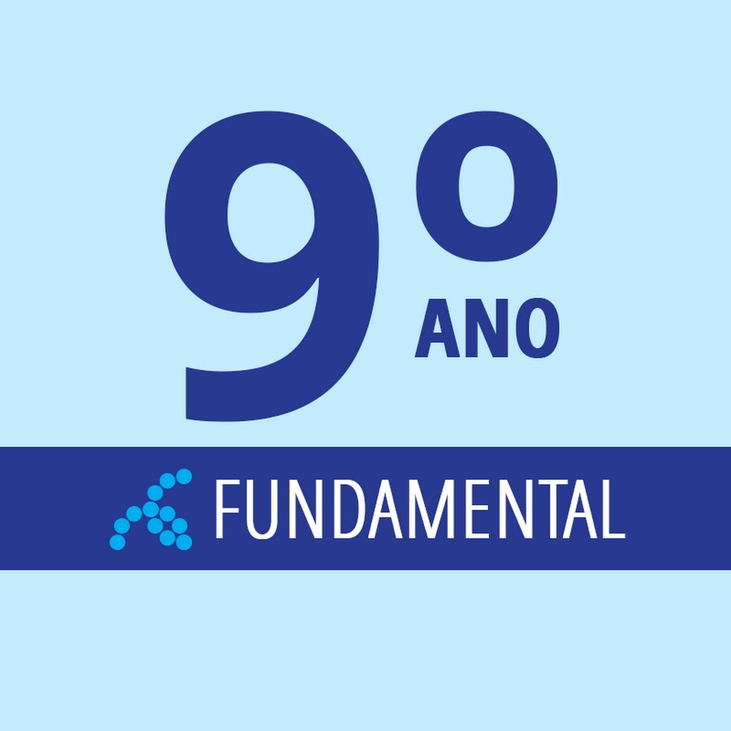

9° ano - Ensino Fundamental
O nono ano é um momento único e significativo na jornada educacional de qualquer estudante. É um período de transição, marcado por importantes descobertas, crescimento pessoal e acadêmico. Este é o momento em que os jovens estão prestes a entrar em uma nova fase de suas vidas, e o nono ano prepara-os habilmente para isso. Uma das características mais notáveis do nono ano é a maneira como ele desafia os alunos a expandir seus horizontes intelectuais. Eles são incentivados a explorar temas mais complexos e a desenvolver habilidades críticas que os prepararão para os desafios futuros. Este é um ano em que a curiosidade é alimentada e os estudantes são encorajados a questionar, analisar e refletir sobre o mundo ao seu redor. Além disso, o nono ano é um período de amadurecimento emocional. Os alunos aprendem a lidar com pressões acadêmicas, sociais e pessoais de uma forma mais madura e responsável. Eles desenvolvem habilidades de resiliência, perseverança e autoconfiança que serão inestimáveis ao longo de suas vidas. Não podemos esquecer a importância dos laços que são formados durante o nono ano. Amizades são fortalecidas, e os estudantes aprendem a trabalhar em equipe, a apoiar uns aos outros e a celebrar as conquistas coletivas. Essas conexões não apenas enriquecem a experiência educacional, mas também proporcionam um apoio vital durante momentos desafiadores. Em resumo, o nono ano é uma fase crucial no percurso educativo de qualquer estudante. É um momento de crescimento, descoberta e preparação para o futuro. Portanto, é digno de todo o reconhecimento e elogio, tanto pelos alunos que passam por ele quanto pelos educadores que os orientam nessa jornada.
1° ano - Ensino Fundamental
.jpg)
O primeiro ano do ensino fundamental é um capítulo emocionante e fundamental na vida de qualquer criança. É um período repleto de novas experiências, aprendizados emocionantes e descobertas encantadoras. O primeiro ano marca o início de uma jornada educacional que moldará o futuro dos alunos de maneiras profundas e significativas. Uma das características mais inspiradoras do primeiro ano do ensino fundamental é a forma como ele introduz os alunos ao mundo da aprendizagem estruturada. Neste estágio, as crianças começam a dominar habilidades fundamentais como a leitura, escrita e matemática básica, abrindo portas para um vasto universo de conhecimento e compreensão. Além disso, o primeiro ano do ensino fundamental é um período de desenvolvimento social e emocional crucial. As crianças aprendem a interagir com os colegas, a compartilhar, a trabalhar em equipe e a resolver conflitos de maneira construtiva. Essas habilidades não apenas enriquecem suas vidas na escola, mas também estabelecem bases sólidas para relacionamentos saudáveis ao longo de suas vidas. É durante o primeiro ano que os alunos desenvolvem uma paixão pela aprendizagem. Eles são incentivados a explorar o mundo ao seu redor, a fazer perguntas e a descobrir respostas por conta própria. Este é um momento mágico em que a curiosidade é nutrida e a imaginação floresce, preparando o terreno para uma vida inteira de descoberta intelectual. Os laços formados durante o primeiro ano do ensino fundamental são preciosos e duradouros. Amizades são forjadas em momentos de brincadeiras e aprendizado, criando memórias que serão lembradas com carinho ao longo dos anos. Os professores desempenham um papel crucial neste processo, orientando e inspirando os alunos a alcançarem todo o seu potencial. Em suma, o primeiro ano do ensino fundamental é um período de inúmeras possibilidades e oportunidades. É um tempo de crescimento, exploração e aprendizado que define o curso do futuro de cada criança. Portanto, é um ano digno de celebração e reconhecimento, tanto pelos alunos que o atravessam quanto pelos educadores que os acompanham nessa jornada emocionante.
3° ano - Ensino Médio
.jpg)
O terceiro ano do ensino médio é um marco crucial na jornada educacional de qualquer estudante. Este é o ano em que os alunos colhem os frutos do seu trabalho árduo ao longo de toda a sua educação secundária e se preparam para dar o próximo grande passo em suas vidas. Uma das características mais notáveis do terceiro ano é a maneira como ele desafia os alunos a integrar e aplicar todo o conhecimento e habilidades que adquiriram ao longo dos anos. Eles enfrentam exames e avaliações rigorosas que testam sua compreensão e proficiência em uma variedade de disciplinas, preparando-os para os desafios acadêmicos que enfrentarão no futuro. Além disso, o terceiro ano do ensino médio é um período de reflexão e autoconhecimento. Os alunos começam a considerar seus interesses, paixões e objetivos futuros, tomando decisões importantes sobre sua educação superior e carreira profissional. Este é um momento crucial para explorar opções, buscar orientação e definir metas realistas para o futuro. Não podemos subestimar a importância das conexões pessoais e sociais formadas durante o terceiro ano. Os laços entre os alunos se fortalecem à medida que enfrentam desafios juntos, celebram conquistas e se apoiam mutuamente durante momentos de pressão e incerteza. Essas amizades e parcerias não apenas enriquecem a experiência educacional, mas também proporcionam um apoio vital durante a transição para a vida pós-escolar. Os professores desempenham um papel fundamental no terceiro ano do ensino médio, fornecendo orientação, incentivo e apoio aos alunos enquanto eles enfrentam os desafios finais de sua educação secundária. Sua dedicação e compromisso ajudam a inspirar e capacitar os alunos a alcançarem todo o seu potencial e a se prepararem para os próximos capítulos de suas vidas. Em resumo, o terceiro ano do ensino médio é um período de crescimento, desafio e autodescoberta. É um momento emocionante e significativo na vida de qualquer estudante, marcado por importantes realizações e preparativos para o futuro. Portanto, é digno de todo o reconhecimento e elogio, tanto pelos alunos que o atravessam quanto pelos educadores que os acompanham nessa jornada transformadora.